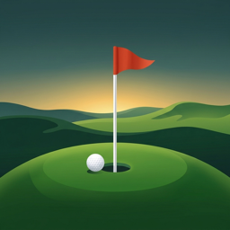
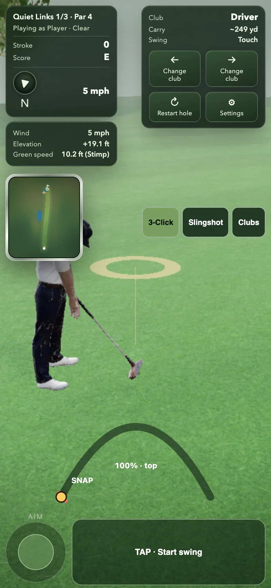
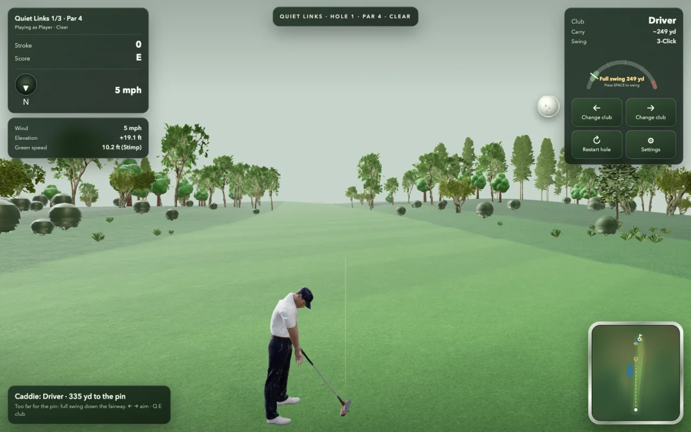
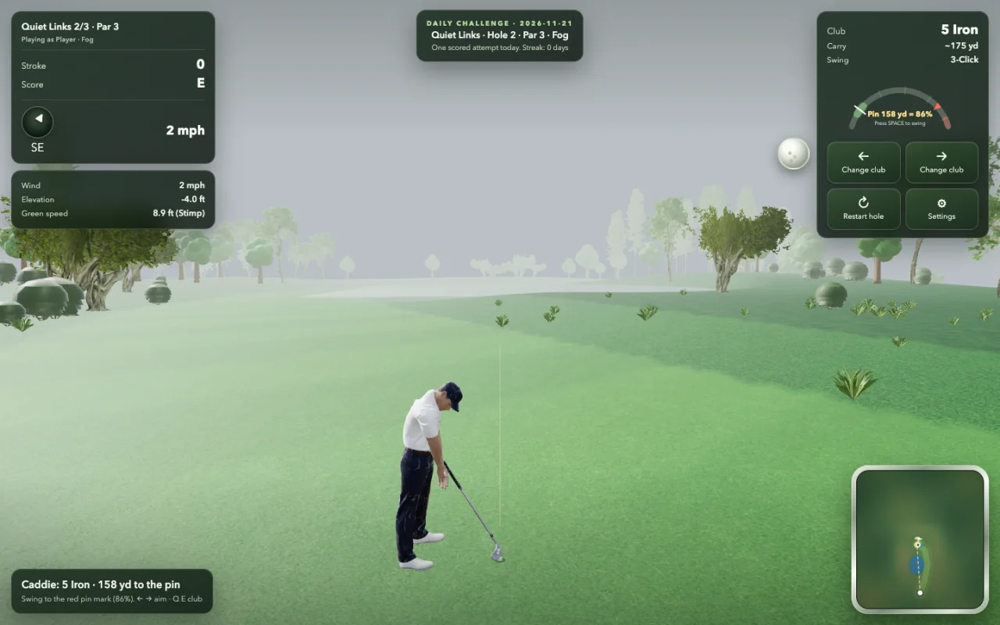
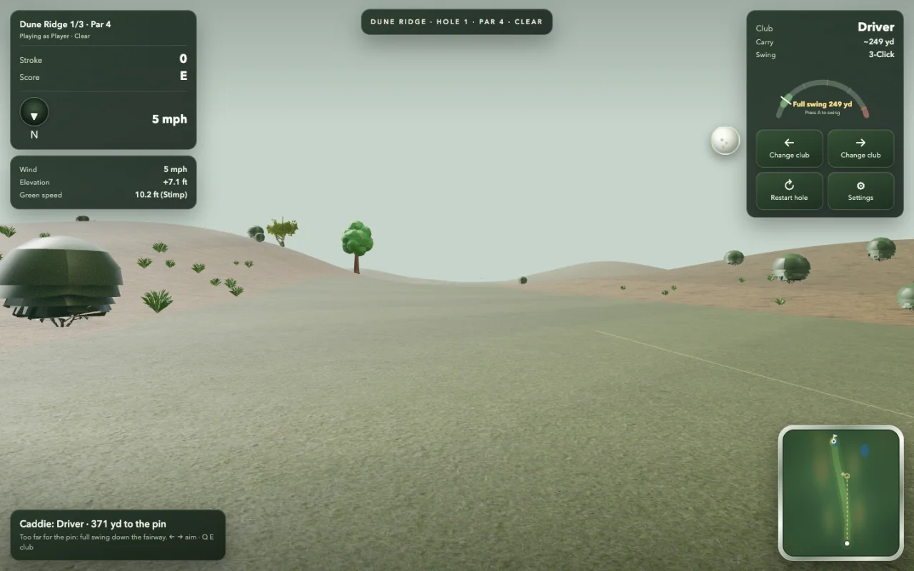
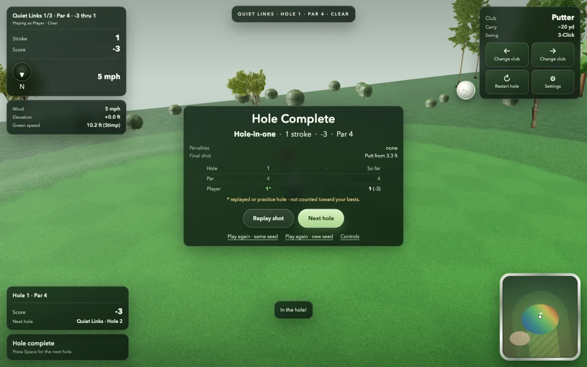
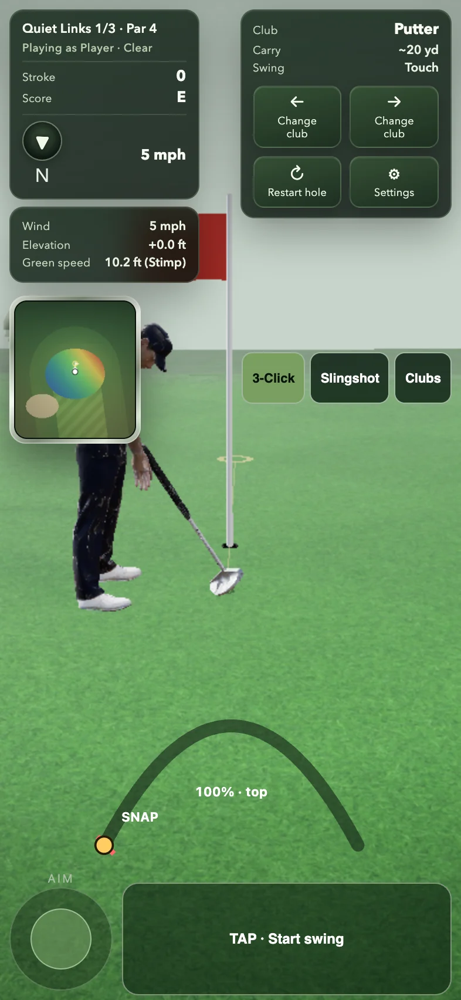

// an original golf game by Ian Trimble //
Comfy Golf
In development · playable now
A cozy 3D golf game in your browser.
Two original three-hole courses, a caddie who reads the shot, and a three-click swing you can learn in a minute. It runs in the browser: no install, no account.
Web browser · free to play · two courses, six holes · in development
- Desktop
- Phone
- Gamepad


Actual gameplay on the first tee of Quiet Links, captured in Chromium on 21 November 2026. The game is a work in progress; the shot and the boards may change.
- 2
- Original courses
- 6
- Holes
- 3
- Click swing
- 7
- Ways to play
- 0
- Installs
Learn it in one shot.
Three presses on one button. The caddie does the reading; you do the timing.
Read the shot
The caddie picks the club and the line, and puts a red mark on the meter where the power reaches the pin. On the green he reads the slope and the pace.
Set the power
Press once to start the backswing and again at the red mark. More power goes further, but the snap is less forgiving.
Snap it straight
The marker comes back. Press on the SNAP line. Early pulls it left, late pushes it right; the line is straight.
Play the ground
Fairway, rough, sand and water all behave differently. The ball rolls out, the lie changes the shot, and the wind moves it in the air.
A whole golf hole, not a driving range.
Every shot has a lie, a wind, a caddie and a consequence. The demo is two short courses built around that.
A caddie, not a manual
He names the club, draws the line and marks the power. The same read drives the red pin mark on the meter, so a newcomer has something to aim at on the very first shot.

Two courses, two moods
Quiet Links is parkland: mown fairways, ponds and a mixed wood. Dune Ridge is a coastal links of straw turf, dunes and wind. Both are original three-hole designs.

What is in the demo
Caddie
A read for every shot, from the tee to the green, including the slope and pace of a putt.
3-Click swing
Press, press at the pin mark, press on the snap line. TrueSwing is the alternative for a freer swing.
Daily Challenge
The UTC date picks the hole, weather and wind, the same for every copy of the game. A first finish sets the score and the streak.
Seven ways to play
Stroke Play, Daily Challenge, Match Play, Skins, Closest to the Pin, Driving Range and Pass & Play.
Touch controls
A thumb aim pad and a swing pad, plus a slingshot pull for power and curl. The boards scale down to the phone.
No account
Bests, medals and the daily streak are kept in local storage. Clearing site data clears them.
One hole. Same for everyone.
No server and no account: the date picks the course, the hole, the weather and the wind, so every copy of the game makes the same choice.

The first finish of the day is the score. Playing it again is practice, and a missed day ends the streak.
A round, a duel, or a bucket of balls.
The same swing works in every mode; the reason to care is different.
Stroke Play
Three holes, a running card and personal bests kept on this device.
Pass & Play
Two to four golfers on one screen and one ball at a time.
Driving Range
Carry, total and offline numbers for every club, with target greens.
Closest to the Pin
Five shots at a tucked pin; the board remembers your best ball.
The game, as it is today.
Captures from the running build on 21 November 2026. No mock-ups and no invented shots.

Controls
One game, whichever device is in front of you.
| Setup | Aim | Swing | Clubs |
|---|---|---|---|
| Keyboard and mouse | Arrow keys, or click the course | Space, three times | Q / E |
| Phone | Touch aim pad | 3-Click tap zone, or Slingshot pull | Club chips |
| Gamepad | Left stick | A, three times | LB / RB |
Private by default.
The game is a static web page. It has no server of its own, no ads and no analytics.
What it does not do
- Account
- None
- Ads or tracking
- None
- Uploads
- None
What it stores on this device
- Your best scores and the medals they earn.
- The Daily Challenge date, score and streak.
- Your golfer’s name, look and handedness.
That is browser local storage. Clearing the site’s data deletes it; there is no copy anywhere else.
Playable your way.
The swing is one button; the rest is there when you need it.
Comfort
- Reduced motion
- Available in the menu
- Handedness
- Right or left in the menu
- Phone layout
- Portrait and landscape
Input
- Keyboard and mouse on a desktop.
- Touch aim and swing on a phone or tablet.
- Gamepad: left stick to aim, A to swing, LB and RB to change club.
The phone layout was checked in a desktop browser at phone size, not on a physical phone.
Free while it is in development.
Free
The demo is live; the game is still being built.
- Two courses, six holes and seven ways to play.
- The Daily Challenge and the medal board.
- Desktop, phone and gamepad controls.
- No account, no ads, no install.
There is no store listing yet. Progress stays in this browser, and the game may change between visits.
Questions.
More in the user guide.